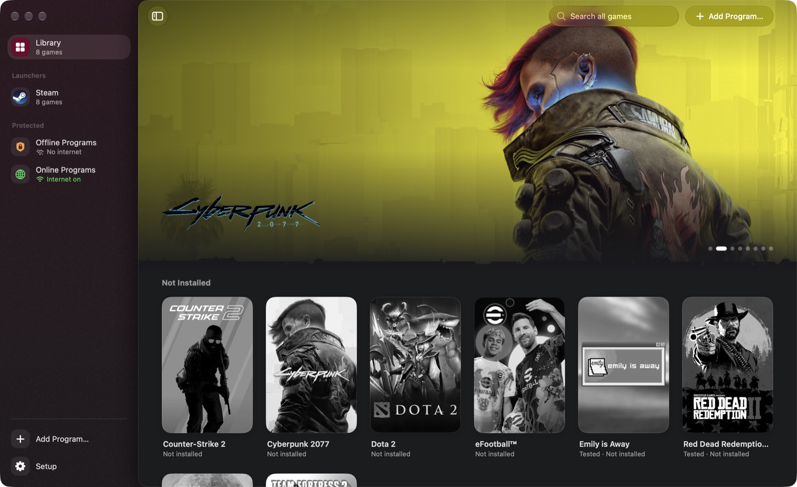
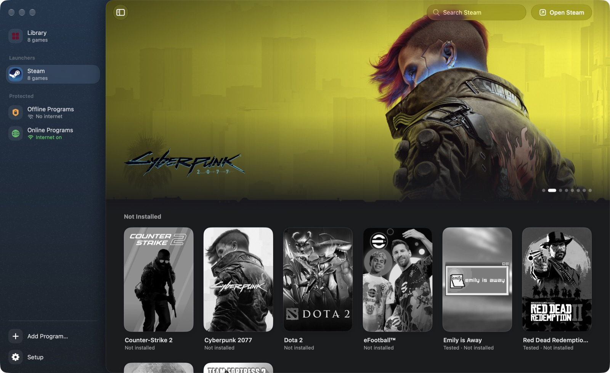
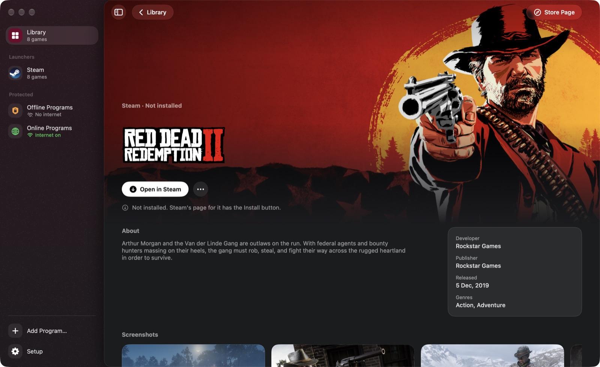
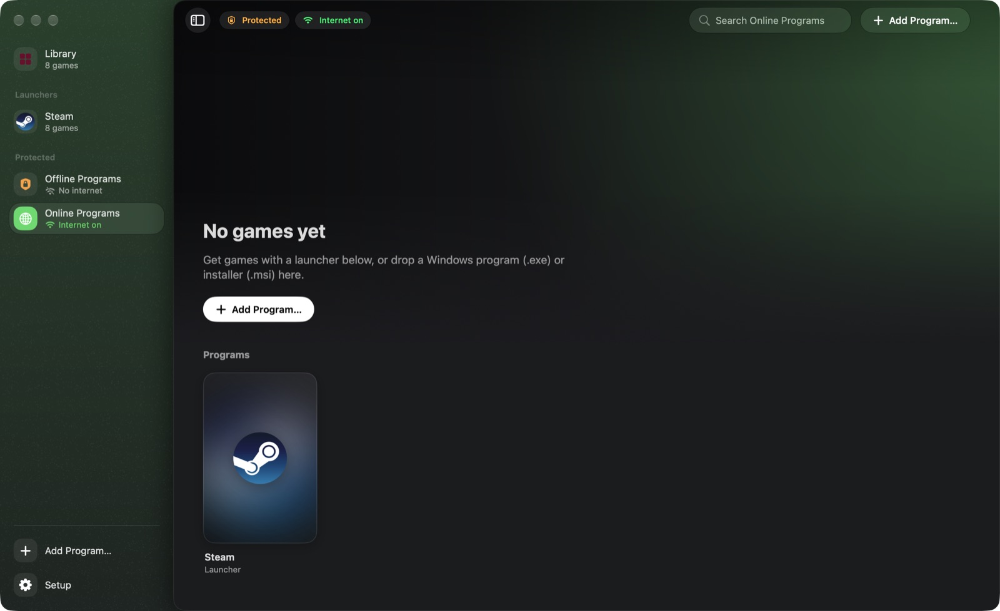

Windows games on your Mac.
Corkscrew is a free, open-source app that runs Windows games and launchers on Apple Silicon. It builds its own Wine, picks the graphics layer per game, and can run programs you don’t trust in a sandbox.
$ curl -fsSL https://prateek-srivastav.github.io/corkscrew/install.sh | bash
Paste it into Terminal. It downloads the latest release, checks its SHA-256, puts Corkscrew in Applications and opens it. Run it again to update. Read the script · Download the DMG
- Apple Silicon
- macOS 26 or 27
- 3.5 GB free disk space + games
- GPL-3.0

What it does
A native SwiftUI app around CodeWeavers’ open-source Wine, built for Apple Silicon and tuned for games.
Graphics per game
D3DMetal from Apple’s Game Porting Toolkit, DXMT, DXVK with MoltenVK, or WineD3D. Corkscrew picks one; you can switch per game.
MetalFX upscaling
Turn on a game’s DLSS option and it runs on MetalFX. Retina mode, the Metal HUD and a performance overlay are a toggle away.
Steam and Rockstar
Steam installs, signs in, downloads and launches games, which show up in the Library on their own. The Rockstar Games Launcher works too.
Sandboxed bottles
Isolated bottles run in a macOS sandbox: no access to your files, keychain or clipboard, and no internet unless you turn it on.
Tuned for speed
msync, Game Mode for fullscreen games, Wine debug output off, and background shader compiles.
Controllers
Xbox controllers work in every tested game, through Wine’s SDL2 support.



Tested games
On a 14″ MacBook Pro (M4, 16 GB, macOS 27). Reports for other games are welcome.
| Game | Setup | Result |
|---|---|---|
| Red Dead Redemption 2 | Steam → Rockstar Games Launcher, DX12 on D3DMetal | About 50 FPS with Ultra textures, High shadows and lighting, DLSS as MetalFX. |
| Black Myth: Wukong Benchmark Tool | Steam, DX12 + MetalFX on D3DMetal | 50 FPS average at 1512×982 (Medium, MetalFX 59%). |
| God of War (2018) | Isolated bottle, internet off, DX11 on D3DMetal with a depth-test fix | Plays on the Ultra preset. |
| Last Pirates Die Together | Isolated bottle, internet on, its own Steam, DX11 on D3DMetal | Plays; online co-op works. |
| Emily is Away | 32-bit, DX11 on DXVK | Runs. |
Install
You need an Apple Silicon Mac with macOS 26 or 27.
- Run the install command in Terminal. It downloads about 320 MB.
- Or use the DMG. Download it from the latest release and drag Corkscrew to Applications. Corkscrew isn’t signed with an Apple Developer ID yet, so the first time, click Done, then Open Anyway in System Settings → Privacy & Security.
- Click Set Up Corkscrew. It installs Rosetta if needed, unpacks the Wine runtime that comes inside the app, and creates a Steam bottle and two protected bottles.
- Open Steam from the Library, sign in, and install your games.
To remove everything, use Settings → Clean Up and Uninstall. To build from source, see the README.